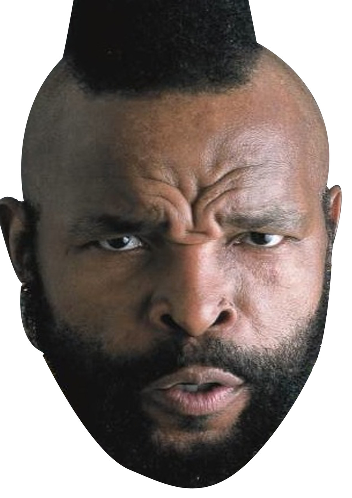

This program demonstrates how to add a graphic to your GameObjects.
NOTE: You only need to edit the game.js file, but you can and should look at the other two .js files.
The GameObject class includes a .graphic function to draw an image and a .img property that contains the information about the image. You can change the image by changing the .img object's properties.
The object's img property is an object that contains the details about your image including the scale. The .img.scale.x and .img.scale.y are a percentages (a number between 0 and 1), while the w and h are pixel values. The image uses it's native size by default, so it's best to make your images the correct size to begin with.
This file also contains a menu state. The menu has a background object. You can create an image for the menu's background and button in photoshop. These would be two separate images.
NOTE: The background for your game could work the same way
IMPORTANT:DO NOT REMOVE mrt.jpg from the html or images folder. The game requires this default image to work
The menu contains an example of drawing text on the Canvas.
